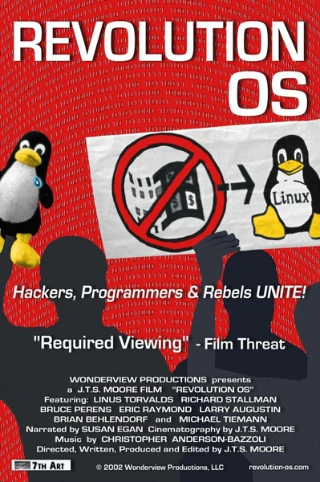

Выбор автора
Революционная ОС
Revolution OS
2001
Документальный, Инди
История движения за свободное программное обеспечение: от идеи Ричарда Столлмана до Linux Линуса Торвальдса — и до того момента, когда открытый исходный код стал основой корпоративной инфраструктуры. Интервью с Торвальдсом, Эриком Рэймондом, Брюсом Перенсом и другими показывают, как «хиппи с лицензией GPL» победили не благодаря идеологии, а благодаря качеству кода. Обязательно к просмотру для всех, кто пользуется Linux, Git и открытыми технологиями — и хочет знать, как всё это начиналось.
Описание на английском
The history of the free software movement, from Richard Stallman's idea to Linus Torvalds's Linux — and to the moment open source became the backbone of corporate infrastructure. Interviews with Torvalds, Eric Raymond, Bruce Perens and others show how 'hippies with a GPL license' won not through ideology but through code quality. Required viewing for everyone who uses Linux, Git and everything open — and wants to know where it all came from.